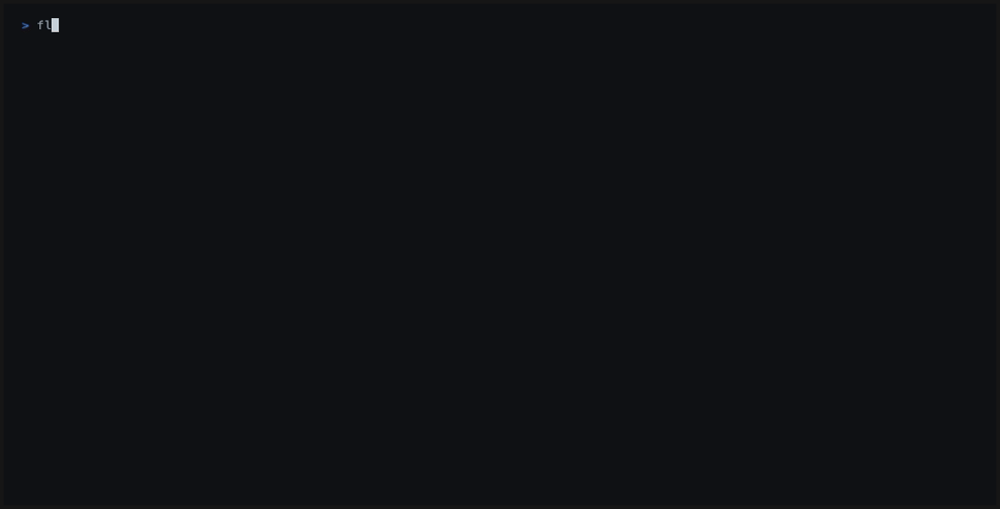

The designated skeptic for your coding agent.
Your agent wrote the code, the tests, and the PR summary. Flaught is the independent party that checks.
The reviewer should not be the author. In agentic development they usually are: the model that wrote your PR also reviews it, summarizes it, and declares it done — same blind spots, same rationalizations, same eagerness to ship. Flaught breaks the loop. Point it at any LLM, independent of whatever wrote the code, add deterministic tooling, and get a genuinely adversarial second opinion instead of an echo.
Set it up with one paste — drop this into your AI coding agent (Claude Code, Codex, Cursor, or pi):
Install Flaught (npm install -g @flaught/core), run flaught init to scaffold the config, then flaught review --no-llm for the deterministic checks (no API key needed). Fix anything you are confident is a real issue. For everything else, STOP and report the remaining findings to me verbatim. Do not run flaught dismiss — dismissing findings is my call, not yours. For the full LLM adversarial pass, set GROQ_API_KEY (or configure llm.provider in .advreview.yml) and drop --no-llm.
Note what this prompt doesn't say: “re-run until clean.” A skeptic the author can dismiss isn't a skeptic. Dismissals (flaught dismiss) are your tool for suppressing false positives — never the agent's tool for getting to green.
Runs in GitHub Actions, GitLab CI, or any shell. No API key needed for the deterministic pass (flaught review --no-llm); set GROQ_API_KEY for the full LLM pass. Provider config →
# install npm install -g @flaught/core # scaffold config + prompts, then review vs main flaught init flaught review --base main
source_type: "deterministic" so you know what came from a tool.source_type: "llm", distinct from the tool findings.Output: a Markdown PR comment plus a versioned JSON artifact you can keep (one snapshot per run, for trend tracking).
Solo founders and small teams shipping agent-written code. You're moving fast because the agent reviews its own work — which means nobody does. Flaught is the gate: it runs on every PR, stays quiet when things are clean, and pulls you in only when something needs human eyes. Two findings and ninety seconds of your attention, not a report.
Engineers landing agent-authored changes in enterprise codebases. Your team is accountable for code no human wrote. Flaught's timestamped, versioned JSON artifact is the paper trail: independent scrutiny occurred, here's what it found, here's whether the model saw the whole change (analysis_completeness). Evidence for your reviewers today; evidence for your compliance regime tomorrow.
Open-source maintainers triaging AI-generated PRs. Drive-by agent PRs are rising and your review time isn't. Run Flaught first: scope-creep detection catches the unrelated hunks, test inversion catches the vacuous tests, and you spend your attention only on contributions that survive the skeptic.

main — three textbook agent failure modes: a string-interpolated SQL query (critical, LLM-asserted), a scope-creep hunk in an unrelated file, and a vacuous test that passes on both sides of the change, caught by test inversion.Self-review is the weak spot in AI-assisted development: the model that wrote your PR is primed to defend it. Point .advreview.yml at a different provider and Flaught breaks that correlation, zero code change.
A sane pairing: code with Claude, review with Groq or GPT-4o. Code with anything, review with a different anything. Any OpenAI-compatible endpoint works via base_url; Anthropic has its own native adapter too, best paired as the coder here, not the reviewer.
The defaults are a starting point. Three surfaces let you reshape the review without touching Flaught's source: the prompt, the config, and the library API.
Full guides: prompt templates, configuration, programmatic API.
Existing review tools were built to check human-written code. Flaught's category is agent-authored code — where the characteristic failures are vacuous tests, scope drift, and confident self-approval, and where the reviewer's independence from the author is the whole point.
| Flaught | CodeRabbit | Open Code ReviewAlibaba · OCR | |
|---|---|---|---|
| Built for agent-authored changes | ✓ | ✗ | ✗ |
| Open source, self-hostable | ✓ | ✗ | ✓ |
| Bring-your-own LLM (incl. local) | ✓ | ✗ | ✓ |
| Deterministic tools + LLM, provenance-tagged | ✓ | ~1 | ~2 |
| Adversarial refute / skeptic pass (cross-model) | ✓ | ✗ | ~3 |
| Test inversion (vacuous-test detection) | ✓ | ✗ | ✗ |
| Scope-creep detection | ✓ | ✗ | ✗ |
✓ yes ~ partial / varies ✗ not a named feature
⚠ The JSON artifact is evidence that scrutiny occurred, not evidence that findings are correct. LLM-asserted findings may include hallucinations. Deterministic-tool findings have their own false-positive rates. An adversarial reviewer that overclaims its own reliability would be the exact thing it exists to catch — so Flaught doesn't. When it flags something, look. When it's clean, that means the skeptic found nothing — not that nothing is there.
And honestly legible: every artifact carries an analysis_completeness field recording whether the LLM saw the whole change or only part of it — a large PR can truncate the prompt — so “review completed” is never mistaken for “comprehensively reviewed.” Field reference →
Named for Monsignor Flaught, the devil's advocate in A Canticle for Leibowitz.